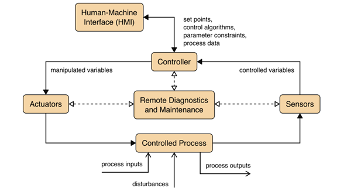
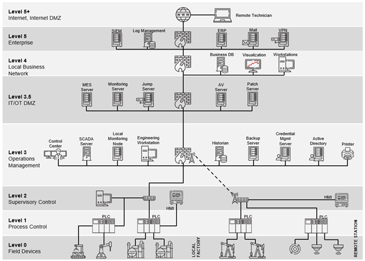

What is OT?
Operational Technology or short OT refers to a broad range of programmable systems and devices that directly or indirectly interact with the physical environment. OT plays an active role across all sectors including manufacturing, energy, transportation, medical, and utilities. In case of indirect interaction, these systems manage other systems or devices that themselves interact with the physical world in a direct way. All of these interactions happen through monitoring and controlling devices, processes, and events.
A very simple example for that could be a thermostat that monitors the temperature in a room. If it senses, that it gets to cold, it turns up the heating thus changes the physical environment around it. Due to this interleaving with the physical world, the term cyber-physical system (CPS) is often used synonymously with OT. While the increased use of CPS is not least due to the increasing convergence of IT, OT and IoT, this mixture of fields can also sometimes make the term blurry.
Types of OT Systems
Not only are the types of systems and devices diverse, but so are the environments which utilize OT systems. Virtually no modern industry or environment operates without a large set of OT systems in operation.
could we convert the list into a list of paragraphs of related items?
OT systems come in a wide variety of forms, ranging from:
- Small 8 to 32 bit microcontrollers embedded in purpose-built devices
- Programmable logic controllers ("PLC")
- Multiple sites encompassing control systems like supervisory control and data acquisition ("SCADA")
- Building automation systems ("BAS")
- Industrial Automation and Control System ("IACS")
- Refrigeration control systems
- Water purification control and safety systems
- Oil and gas pumping, flow, and processing control systems
- Physical access control systems
- Medical devices
- And many others, as OT systems far outnumber IT systems in use.
OT security problems in these industries can have major impacts on the society and surrounding environment. This is also why OT security is of ever-increasing importance, this can be seen in previous attacks using several highly sophisticated pieces of malware that have already affected OT systems, from the notorious Stuxnet in 2010 to power outages in Ukraine due to attack tools such as BlackEnergy or Industroyer.
Example OT Architectures
A typical OT system consists of control loops, human-machine interfaces (HMI) and remote diagnostics and maintenance tools like depicted in the image below.

Source: NIST SP 800-82r3, p. 11
A control loop is meant – as the name suggests – to control some kind of process. To do so, the loop employs a combination of sensors, actuators and controllers. Sensors measure certain physical properties like temperature or pressure and send these controlled variables to the controller. This component acts as the brain of the loop. By interpreting the sent information based on a control algorithm and target set points, so-called manipulated variables are created. These are sent to the actuators, which are the components that directly manipulate the controlled process according to the commands of the controller.
For example, a sensor that measures the temperature of a boiler sends the controlled variable temperature to the controller. If the controller determines that the measured temperature is below the set target, he instructs an actuator to activate the heater rod of the boiler until the temperature matches the set target temperature again.
This process can mostly be monitored and manipulated by human operators via the so-called HMI. In our example the HMI maybe allows the operators to change the target temperature and to observe the current state of the boiler. Finally, remote diagnostics and maintenance tools can be used in case of abnormal operation of the system or solution.
Purdue Reference Model
While this control loop gives a general overview of the principal function of a control system, not all OT systems and devices are equal. While some like PLCs are more involved in direct control of individual processes, others are used on a higher level to monitor and control whole ecosystems. An example for such a high level system would be a geographically distributed SCADA system used to monitor and control a complex infrastructure like a power grid.
To get a better conceptual understanding of the different OT technologies, the Purdue Reference Model can be used. This hierarchical model depicts the data flows in ICS networks and is composed of several layers. While initially deployed in the 1990s, the Purdue Model today exists in many slightly modified versions, but in general there are 6 separate levels and additional DMZs between them. The image below shows these levels starting with Level 0 (the actual physical field devices) up to Level 5, where the enterprise IT resides. It can be seen that when going up the levels, the corresponding devices scope gets broader. While Level 0 and Level 1 are limited to the direct process (“shopfloor”), Level 2 already comprises a whole local station.

Source: Limes Security ICS.211 Industrial Security Training Advanced Technical Expert, p. 345
It has to be noted that the Purdue Model should not be seen as a strict, universal architecture, but a reference to think about how the overall system can be structured and where trust boundaries can and should occur. Nonetheless, the diagram above already shows one crucial security consideration in OT: The segmentation and separation between IT and OT (in this case realized by Level 3.5 IT/OT DMZ). As most security incidents still occur in IT, it is of utmost importance to prevent such an incident to spread to OT.
Common IT-Systems in OT
Knowing now about the Purdue Model, the question arises about common IT devices such as PCs or printers and their relationship to the OT network and systems. Here we need to remind ourselves that the terms Information Technology and Operational Technology are just terms to describe a broader range of certain devices with a common purpose, not even common functionality. OT and IT are just concepts and have no strict universally applicable definition. Therefore, the question of whether "IT" devices belong in OT or are OT devices is a classic "it depends".
The easiest categorization would be to view everything below Purdue 3.5 (DMZ) as OT regardless of the device. This makes sense when looking at two examples from different fields:
- An HMI for a CNC machine: The HMI is basically a more or less normal Windows PC that controls the CNC machine directly. The Windows PC is therefore an integral part of the OT infrastructure. The same applies to other devices such as CT scanning or MRI machines in the medical field.
- SCADA is a term strongly rooted in the OT world. But SCADA is nowadays just Windows PCs with custom software and remote interfaces. No one would argue that a SCADA system is not part of core OT systems. But underneath the visualization, it is "just common IT devices.".
- ERP functions are offloaded into a cloud environment. There exists a site-to-site tunnel that integrates the cloud environment into Purdue Level 3. In this case, that network in the cloud is also part OT and has to be considered when calculating risk for example.
With those two examples and the reasoning above, we can define OT-devices are devices that are part of the OT domain (general domain, not AD) and IT devices are part of the IT domain.
Stakeholders
To achieve security in OT systems and devices, several stakeholders have to work hand in hand. For example, the standards series for security for OT in automation and control systems IEC 62443 lists the following crucial roles:
- The asset owner that operates the so-called Industrial Automation and Control System (IACS). IACS is a generic term of IEC 62443 that describes a control system and any complementary hardware and software components that have been installed and configured to operate together.
- The maintenance service provider that – as the name implies – maintains an IACS.
- The integration service provider (integrator) that assembles a whole automation solution for a intended environment by combining several components.
- The product supplier that develops and manufactures components like applications, embedded devices, network components or similar.
OT security challenges are different for these stakeholders, which is also reflected in the different standards of the IEC 62443 series. For example, an operator does not have access to the development process of the specific component and thus cannot implement security measures at the source code level.
On the other hand, the operator more or less can shape the intended environment where the solution is employed and therefor is capable of introducing mitigating measures like strong network segmentation.
As the impact of security failures in OT can be tremendous, there is an increasing number of laws and regulations governing the development and operation of OT systems and devices. Examples are the European NIS2 and the Cyber Resilience Act (CRA), the US EO14028 or the China Cybersecurity Law.